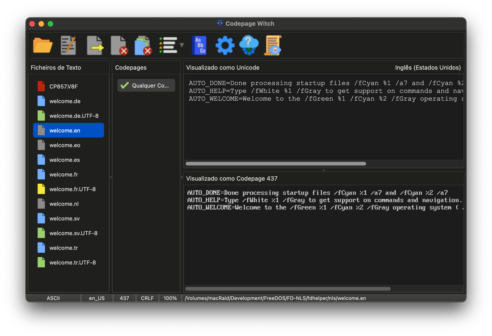
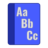
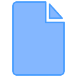
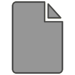
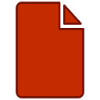

O Rosto da Bruxa: A janela principal
A interface principal foi desenhada para fornecer um "Espelho" em tempo real entre os seus ficheiros de origem e o seu destino pretendido. A Bruja utiliza um sistema de cores para comunicar o estado dos seus ficheiros num relance.

Os Encantamentos: A Barra de Ferramentas
A Barra de Ferramentas é a sua principal fonte de magia. Aloja os feitiços para abrir ficheiros, exportar as suas transmutações e aceder às definições profundas.
| Abrir: Explore o sistema de ficheiros para selecionar um ou mais ficheiros. Também pode usar Arrastar e Largar para lançar ficheiros para o caldeirão. | |
| Editar: Lance o ficheiro selecionado para o seu editor de texto externo preferido para ajustes manuais. | |
| Exportar: Sele as suas transmutações. Isto guarda o ficheiro usando a página de códigos e os finais de linha escolhidos. | |
| Fechar: Banir o ficheiro selecionado do caldeirão. | |
| Fechar Tudo: Limpe o caldeirão completamente, removendo todos os ficheiros da sessão. | |
| Filtrar: Reduza a lista de Encantamentos para mostrar apenas correspondências totais, potenciais ou todas as páginas de códigos conhecidas. | |
 |
Dicionário: Consulte os dicionários Mestre e do Utilizador para ajudar a Bruxa a expandir o seu vocabulário multilingue. |
 |
Opções: Observe a mecânica interna da Bruxa. Ajuste a sua aparência, comportamento e regras automáticas. |
| Atualizador: Procure no horizonte digital por novas versões da Codepage Witch. | |
| Log: Abra o registo interno da Bruxa para ver relatórios de análise detalhados. |
O Caldeirão de Ficheiros: Os Ícones de Estado
À medida que os ficheiros são adicionados, a cor do ícone indica as descobertas da Bruxa:
| A Análise: O ficheiro está a ser processado em segundo plano. | |
| Origem Unicode: Um ficheiro UTF-8. A Bruxa mapeou as suas melhores páginas de códigos. | |
 |
Origem Legada: Um ficheiro codificado por página de códigos. A Bruxa usa análise estatística. |
 |
ASCII Simples: Texto de 7 bits sem caracteres especiais. Seguro para qualquer conversão. |
| O Augúrio: Foi detetado um erro de formatação (como a falta de uma nova linha final). | |
 |
O Vazio: Ocorreu um erro de leitura ou trata-se de um ficheiro binário. |
Os Dois Espelhos: Original vs. Transmutado
- Visualizador Unicode (Superior): Mostra o ficheiro como texto UTF-8 padrão.
- Visualizador de Codepage (Inferior): Renderiza o texto usando a página de códigos selecionada.